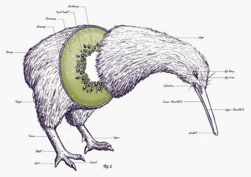
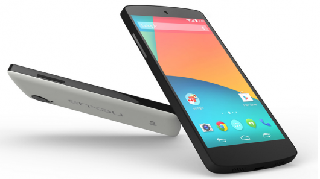
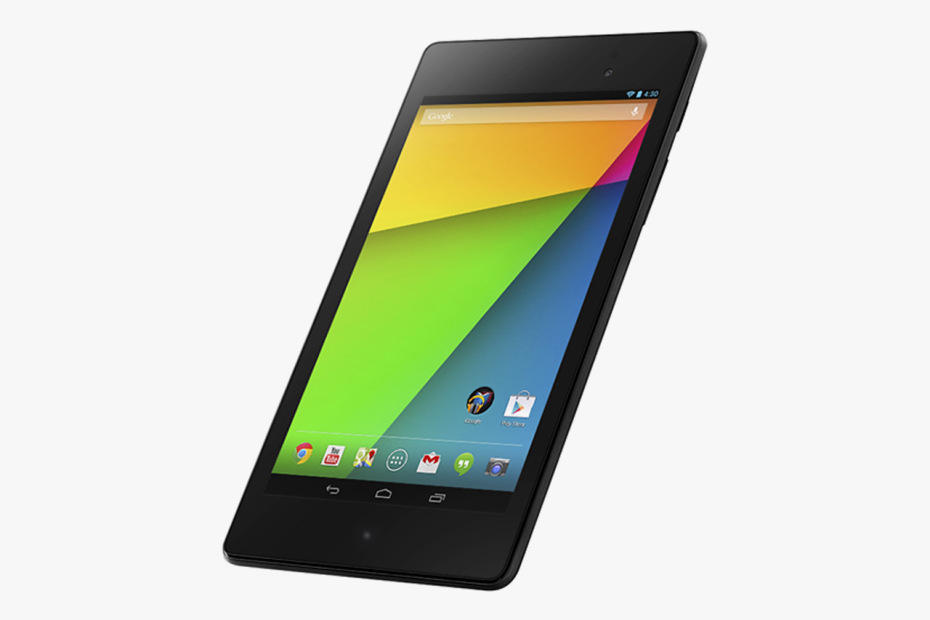
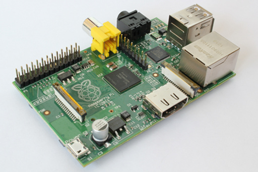

Kivy App Contest 2014

How much Kivy is inside you ?
Kivy is launching its second application development contest! This is
a great chance for new and experienced users to show off their skills
and compete for prizes. Entries will be judged on a range of criteria
accessible to both new and experienced programmers, so don't be afraid
to dive in!
Prizes
Many thanks to our sponsors for making these great prizes possible.
Prizes will be awarded to:
1st place: top overall score

Google Nexus 5 16G,
plus
PyCharm
license,
gymglish/
frantastique
course and t-shirt!
2nd place: Second best overall score.

Google Nexus 7 32G,
plus
PyCharm
license,
gymglish/
frantastique
course and t-shirt!
3rd place: 3rd best overall score
Google Nexus 7 16G,
plus
PyCharm license and t-shirt!
Special prize categories
Winners in these categories will each receive a Raspberry Pi
along with their t-shirt.

- Cross platform compatibility - for adapting well to
all of phones, tablets and desktops.
- Fun and engagment - some applications are just outright fun to
use...now you can get rewarded for it!
- Most polished - make it bug free and beautiful, and you deserve
this prize.
- Technical use of Kivy - for a well constructed application
making good use of Kivy techniques and tools.
- Best app idea - get recognised for your imaginative application theme.
Enter
Now Accepting Contest Entries
Theme: will be revealed at the contest start date
Next step: April 15th, 2014, Start Announce contest theme and rules.
Take a look at our previous contests: Contest 2012.
Spread the word with our posters: How much Kivy is inside you, Snake rider
Call for Sponsors
We're currently looking for more sponsors to help make this contest
even bigger and better! Sponsorship is possible at a range of tiers
with different levels of interaction and benefits to your organization.
Interested parties are invited to read our
sponsorship prospectus
and
contact us for more
information.
Guidelines
These are general guidelines, exact rules and terms will be posted before the
contest starts.
The goal is to show the world some of the great things that can be built
quickly with Kivy while having fun, and to give more people an
opportunity to try out Kivy's cool features. The general guidelines are:
- Keep it family friendly.
- Make it fun and attractive, show how your Kivy app can stand out from the crowd.
- Entries can be from individuals or from teams.
- No prior code - build your full app during the competition month. You are allowed to re-use existing known open source libraries in conjunction with Kivy.
- Don't forget the theme (to be revealed)!
Timeline
|
March 15th, 2014
|
Kivy Programming Contest announced, and call for sponsors.
|
|---|
|
April 2nd, 2014
| Start accepting entries from individuals or teams, but
please don't start your coding until the official start date.
|
|---|
|
April 15th, 2014
|
Start of Contest, final rules published.
|
|---|
|
May 14th, 2014, 23:59 GMT
|
End of contest, final app deadline!
|
|---|
|
May 20th, 2014
|
Winners announced!
|
|---|
{kind=link}
{kind=link}